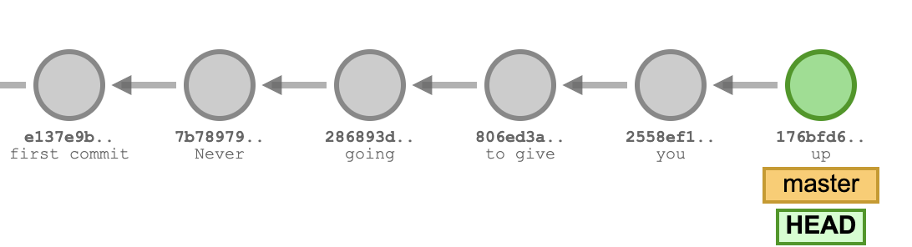
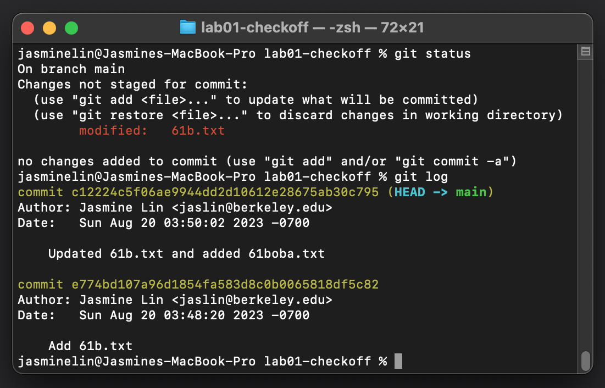
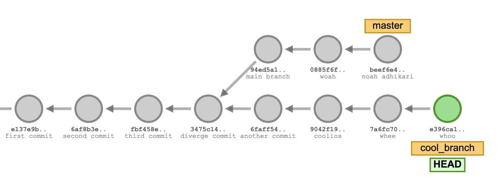
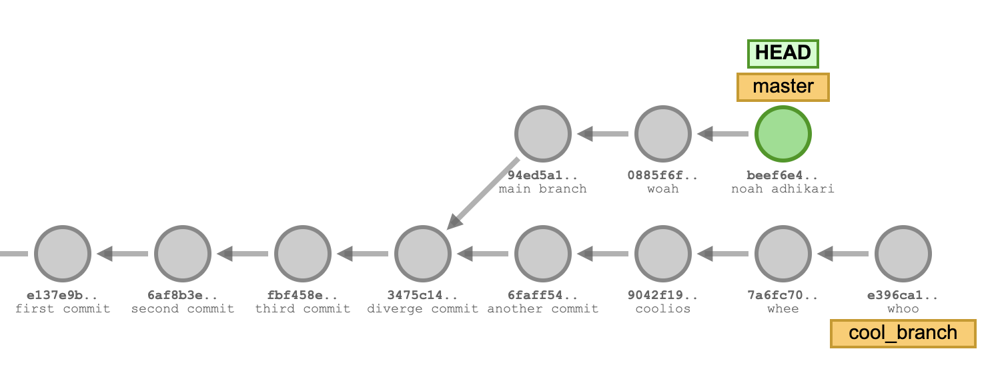
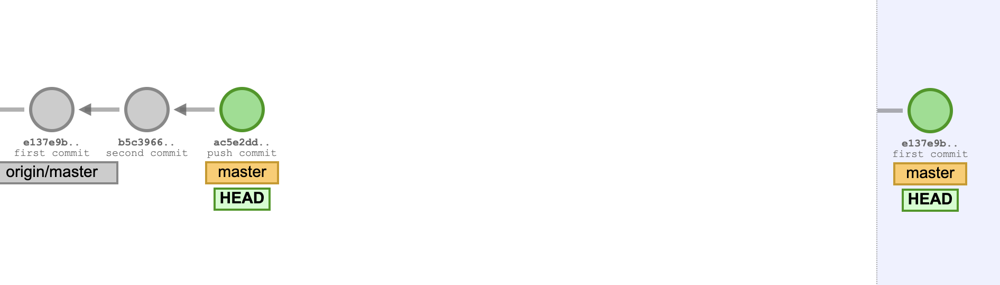
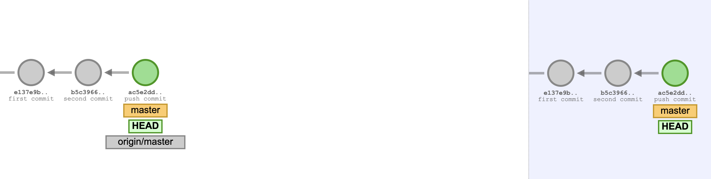
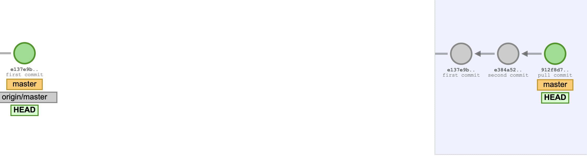
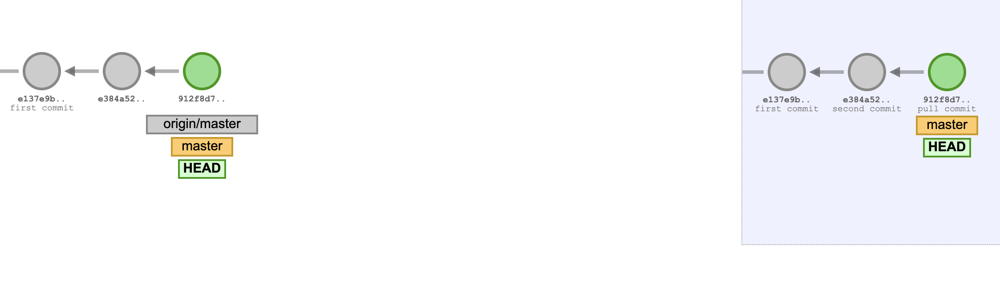

实验04：Git
常见问题
实验04的常见问题在 这里 。
简介
在此之前，我们一直在使用 Git 和 Github 来提交作业，但没有深入讨论超出所需的内容。在本实验作业中，我们将重温之前展示的一些 git 命令，并介绍新的命令，以便您对 Git（和 Github）更加熟悉。本实验将贯穿始终包含练习，以帮助加强您对 Git 的理解。
请不要跳着做本实验， 如果遇到困难不要运行您在网上找到的命令 （这可能导致实验中的潜在问题）。在完成本实验时，请仔细阅读命令和说明，确保您理解它们！
请确保从您的
sp24-s***
仓库中拉取 skeleton 以获取所需文件。在本实验中，我们只有一个文件
magic_word.txt
。
Git 与 GitHub 的对比
在我们探索 Git 命令之前，先来讨论一下 Git 和 Github 之间的区别。
Git
Git 是一个免费的开源版本控制系统（这意味着源代码可供用户和开发者使用）。作为版本控制系统，我们使用 Git 来帮助管理不同版本的代码并跟踪源代码中的更改。如果有多个开发人员同时在一个程序上工作，这将更加有用。没有版本控制系统，开发人员之间就不会有太多交流，对源代码的更改也不会被其他开发人员知道。
在大多数情况下，Git 的数据模型或表示基于链表。我们稍后会详细讨论，但每当我们想要保存仓库的快照时，我们就会提交它（就像到目前为止我们在想要提交作业时所做的那样）。这些提交是以某种方式链接在一起的。下面是它的一个可视化图示：

这个提交链表形成了您所做更改的历史记录。最近的提交/最新快照是上面的绿色圆圈。
Github
Github 是一个在线 git 仓库托管服务。Git 仓库是中央位置，我们的文件和目录所做的任何更改都在此被跟踪和管理（这就是您的
sp24-s***
仓库）。仓库可以在您的计算机上本地创建，也可以在 Github 上创建。
Github 使得与其他开发人员协作更加容易，因为您可以更轻松地共享代码，同时也允许我们将代码保存在远程服务器上。如果您有一些本地存储的代码，您可以将其保存到 Github。这样，如果您的本地代码以某种方式被销毁，您将有一份代码副本保存在其他地方。这就是为什么我们说经常提交，这样您就可以保存作业上的工作进度！
Git 命令
在本节中，我们描述了一些您可能会用到的一些更常见的 Git 命令。请记住，这并不是所有可用 Git 命令的完整列表。让我们开始吧！
init
以下命令可以在您想要变成 Git 仓库的目录中运行：
git init
这会在该目录中初始化一个 git 仓库。
add
,
commit
当我们想要保存 git 仓库中所做的更改时，我们首先需要选择哪些更改应该被保存：
git add some_file.txt
如果您想选择所有已进行的更改，可以运行以下快捷命令：
git add .
我们选择的更改实际上还没有被保存。
当我们
add
某些文件/更改时，这意味着我们已经将它们放入了暂存区，暂存区存储了关于下一次提交将包含什么内容的信息。要真正保存我们的更改，或者对当前仓库进行快照，我们运行
git commit -m
，如下所示：
git commit -m "We put a commit message here to describe what changes we made."
当我们提交任何更改时，添加描述性的提交信息是一个好习惯——这使得跟踪一段时间内所做的更改以及让其他开发人员更容易理解您所做的更改变得更加容易。
status
如果您想查看进行了哪些更改，可以在仓库中运行
git status
。它可能看起来与下面略有不同，但它会显示哪些文件已被修改。如果它们在"未暂存以提交的更改"下，这意味着它们还没有被添加到暂存区。一旦它们被添加，这些文件将显示在"要提交的更改"下。
On branch main
Your branch 是 up to date with 'origin/main'.
Changes not staged for commit:
(use "git add <file>..." to update what will be committed)
(use "git restore <file>..." to discard changes in working directory)
modified: proj1a/src/LinkedListDeque61B.java
modified: proj1b/src/ArrayDeque61B.java
modified: proj1b/tests/ArrayDeque61BTest.java
在这个例子中，
git status
显示我们修改了三个尚未暂存以提交的文件。一旦我们
git add
它们，
git status
将发生变化：
On branch main
Your branch 是 up to date with 'origin/main'.
Changes to be committed:
(use "git restore --staged <file>..." to unstage)
modified: proj1a/src/LinkedListDeque61B.java
modified: proj1b/src/ArrayDeque61B.java
modified: proj1b/tests/ArrayDeque61BTest.java
在这两种情况下，"未暂存的更改"和"要提交的更改"都是针对已经 跟踪 的或之前版本中已保存的文件。Git 也会显示 未跟踪 的文件，这些文件在之前版本中没有保存过。
log
在 git 仓库中运行
git log
会显示我们所有已提交历史的记录。例如，您会得到类似于以下内容：
$ git log
commit 8g955d88159fc8e4504d7220e33fad34f8f2c6bd
Author: Elana Ho <elana@Elana-MacBook-Air.local>
Date: Tue Feb 7 19:06:48 2016 -0800
Added common Git problems to lab04.
这意味着您能够查看所有提交的完整历史。记住您每次提交时添加的信息吗？它会显示在
git log
中。在这个例子中，提交信息是"Added common Git problems to lab04."也就是说，我们在提交时运行了
git commit -m "Added common Git problems to lab04."
。
另一个 重要的 东西是"commit"标题旁边的内容。它看起来像一串随机字符和数字，但它代表 提交 ID 。提交 ID 是 Git 分配的唯一 ID，用于标识该提交中所做的特定更改。 这对于下一节很重要。
restore
如果我们想从程序的以前版本恢复更改怎么办？我们可以使用
git restore
！有几种方法可以做到这一点。
如果我们想将文件恢复到最近一次提交中的版本，那么我们可以运行
git restore
而不指定提交 ID：
git restore [path_to_file]
如果我们想要恢复到 特定 提交，我们可以识别该提交的 ID 并从该提交恢复文件。
git restore --source=[commitID] [path_to_file]
Git 练习（第 1.1 部分）
现在您已经准备好开始使用 git 了！您的下一个任务是通过设置一个仓库并进行几次提交来完成一个小型 git 工作流程。在最后，您需要通过填写 Beacon 上的表单来完成签到。
这是要在您的本地计算机上完成的，但
要在您的
sp24-s***
仓库之外完成。确保不要在您的
sp24-s***
中初始化一个仓库！
如果您需要关于创建目录、创建文件、更改目录等的帮助，请参考 如何使用终端 。
-
创建一个名为
lab04-checkoff的目录。您可以将此目录放在计算机上的任何位置 （但不要放在您的sp24-s***仓库中） 。 -
进入
lab04-checkoff目录，并初始化一个 git 仓库。 -
以任何您喜欢的方式创建一个名为
61b.txt的文件。在这个文本文件中，添加文本"Created 61b.txt"。 -
以任何您喜欢的方式创建另一个名为
61boba.txt的文件。在这个文本文件中，添加文本"Created 61boba.txt"。 -
开始跟踪
只有
61b.txt，并创建一个新的提交，只包含这个文件，提交信息为：Add 61b.txt。 -
通过将文件中的文本更改为："61b.txt changed to version 2"来修改
61b.txt。 -
再做一个提交，这次包含
61b.txt和61boba.txt。提交信息应为：Updated 61b.txt and added 61boba.txt。 -
再修改一次
61b.txt，将文件中的文本更改为："61b.txt changed to final version"。 不要提交这个版本。此时，如果您输入
git status和git log，您会看到类似于以下内容：
-
仅使用 git
，将
61b.txt恢复到最近一次提交中的版本。 -
仅使用 git
，将
61b.txt恢复到第一次提交中的版本。
请确保保存此仓库和目录，直到您在 Beacon 上完成表单。
完成上述步骤，并完成第一个谷歌表单。在您获得魔法词之前，还有第二个谷歌表单需要填写。
Git 命令（续）
让我们继续！在这一节中，我们将更深入地讨论远程仓库和分支是什么。
remote add
有时，我们希望能够从另一个仓库拉取更改，特别是托管在 GitHub 上的仓库。为此，我们可以将该仓库添加为"远程仓库"。例如，在实验 01 中，我们使用以下命令在我们的个人仓库中添加 skeleton 仓库：
git remote add skeleton https://github.com/Berkeley-CS61B/skeleton-sp24.git
让我们来分析一下。当我们想要添加一个远程仓库时，我们指定远程仓库的名称以及远程 URL。在这个例子中，名称是
skeleton
，URL 是
https://github.com/Berkeley-CS61B/skeleton-sp24.git
。然后，当我们想要从中
拉取
或
推送
时，我们可以使用其名称来引用远程仓库。
因此，要添加远程仓库，我们可以运行以下命令：
git remote add [remote-name] [remote-url]
您可以在仓库中运行
git remote -v
来检查已添加了哪些远程仓库。
switch
我们还没有讨论 Git 的另一个功能，即分支！您在这个课程中不会太多使用它（或者根本不会！）（除了本实验），但它是一个有用的知识。
大多数版本控制系统都有某种分支系统。当我们说分支时，意味着我们从"主"分支"分叉"出来。分支允许我们同时跟踪多个版本的工作（可以将其想象为平行宇宙）。我们想要创建另一个分支的原因之一是，如果我们想要开发程序的另一个功能，但我们仍然希望维护我们当前的版本。
让我们看一个可视化图示。

在上图中，有两个分支，
master
和
cool_branch
。请注意，我们已经做了多次提交。在某个时刻，我们从
master
"分支"出来（在带有信息"diverge commit"的提交处），并从该特定分支分叉出来。现在，如果我们想要停止在当前分支（
cool_branch
）上工作，我们可以切换回我们的
master
分支。我们通过运行以下命令来做到这一点：
git switch [branch-name]

在这个例子中，我们会运行
git switch master
。请注意，HEAD 标签现在指向
master
上最新的提交。
我们这里不会介绍，但如果您想了解如何创建分支，请随意查阅。
restore
再探讨
现在我们了解了远程和分支的概念，让我们重新回顾一下
restore
命令。在前面的章节中，我们讨论了使用
restore
根据最新提交或提交 ID 来恢复到之前的提交，但我们也可以使用该命令根据远程仓库和指定分支将更改恢复到之前的状态。它看起来是这样的：
git restore --source=[remote-name]/[branch-name] [file_name]
它会根据远程仓库分支的最新提交内容将文件恢复回去。
push
如果我们想将在本地计算机上进行的任何提交推送到远程仓库，我们可以使用
git push
：
git push [remote-name] [branch]
在本课程中，我们使用
git push origin main
将本地仓库的任何更改推送到我们的远程仓库。
origin
是代表我们托管在 Github 上的个人仓库的远程仓库，
main
是我们工作的分支。
下面是当我们有几个尚未推送的本地提交时的可视化图示。左侧是本地仓库，右侧是远程仓库。

推送后，我们的提交现在已保存在远程仓库中：

pull
相反，如果我们想从远程仓库拉取任何更改到本地仓库，我们可以运行
git pull
：
git pull [remote-name] [branch]
我们之前从 skeleton 拉取时已经这样做过了：
git pull skeleton main
。以下是我们还没有拉取的几个远程提交的可视化图示：

拉取后，我们的远程提交现在位于本地仓库中：

常见 Git 问题
在本节中，我们将介绍您可能遇到的一些常见 Git 问题。这并不是您可能看到的所有问题的完整列表。您可以在我们的指南中阅读更多关于 git 问题的信息 这里 。
虽然这旨在帮助诊断 Git 问题并通过常见方法解决它们，但如果您不太确定，请务必寻求帮助！
致命错误：拒绝合并不相关的历史
这通常发生在有人在您拉取后更改了 skeleton 代码中的文件时。要修复，请运行
git pull <remote-repo> main --allow-unrelated-histories --no-rebase
。这可能会强制产生合并冲突（更多相关信息见下文）。
合并冲突
合并冲突消息可能如下所示：
$ git pull origin main
From github.com:Berkeley-CS61B/course-materials-sp16
* branch main -> FETCH_HEAD
Auto-merging proj/proj0/solution/canonical/Planet.java
CONFLICT (content): Merge conflict in proj/proj0/solution/canonical/Planet.java
Automatic merge failed; fix conflicts and then commit the result.
当对同一文件的不同修改影响了相同的代码行时，就会发生合并冲突，因此无法共存。Git 会指示哪些文件有冲突； 要修复它们，请在 IntelliJ 中打开文件并手动解决。 这些冲突在文件中会显示如下：
public Planet(Planet p) {
<<<<<<< HEAD
this.xPos = p.xPos;
this.yPos = p.yPos;
=======
this.xxPos = p.xxPos;
this.yyPos = p.yyPos;
>>>>>>> 27ddd0c71515e5cfc7f58a43bcf0e2144c127aed
<<<<<<< HEAD
和
=======
之间的所有内容都来自您的本地版本。
=======
和
27ddd0c71515e5cfc7f58a43bcf0e2144c127aed
之间的所有内容都来自您的远程仓库。在这两个选项之间，选择您想要保留的修改。一旦您解决了所有冲突，添加并提交您的更改。运行 git status 检查仓库的状态。
我们在这里提供了更多关于合并冲突的阅读材料 这里 和 这里 。
您的分支领先于 'origin/main' X 个提交。
当本地仓库与其远程对应仓库不再同步时，就会发生这种情况。如果您想保留本地版本的文件，请使用
git push
。如果您想用远程仓库中的版本覆盖本地更改，请使用
git reset --hard origin/main
。
Git 练习（第 1.2 部分）
就像您在第 1.1 部分中所做的那样，导航到 Beacon 并完成第二个表单。
一旦您完成两个谷歌表单（第 1.1 和 1.2 部分中的）并获得满分，您应该能够获得一个
魔法词
。将此魔法词放在
magic_word.txt
的
第一行
。
Git 练习（第 2 部分）
在这个练习中，我们将让您克隆一个 git 仓库，您将使用您所学的一些命令来查找隐藏在仓库中的密码。复制并粘贴以下命令来克隆您的仓库，
在您的
sp24-s***
仓库之外
。具体位置由您决定，只要它不在另一个仓库中即可。
在运行命令之前，
请仔细检查您不在您的个人仓库中。
如果您在，消息会阻止您在
sp24-s***
仓库内克隆仓库。
curl -sS https://sp24.datastructur.es/labs/lab04/lab04.sh | bash
检查名为
git-exercise-sp24
的仓库是否出现。如果存在，
cd
进入它，在 IntelliJ 中打开
git-exercise-sp24
，您就可以继续进行练习了！
第 2.1 部分
当您打开仓库时，您会注意到有一个
password.txt
文件。第一项任务的密码就在这里。它似乎不在这里，但可能在之前的提交中……看看您是否能找到该提交并使用我们学到的命令恢复到该提交（您可能需要使用方向键滚动！）。
找到任务 1 的密码。完成后，您可以将密码存储在 lab04 目录中
magic_word.txt
文件的
第二行
。
在继续之前，您还需要将文件恢复到最新的提交。
第 2.2 部分
完成任务 1 后，让我们尝试找出第二个密码在哪里。您克隆的仓库有多个分支，但名为
erik
的分支可能有我们想要的东西。让我们尝试切换到该分支，看看密码是否在里面。
找到任务 2 的密码。您可以通过检查您所在提交的提交信息来验证这是正确的密码。完成后，您可以将密码存储在 lab04 目录中
magic_word.txt
文件的
第三行
。找到密码后，
切换回
main
分支。
第 2.3 部分
第三个密码似乎不在这个仓库中，而是在另一个仓库中！密码在这个仓库中（请注意这不是一个命令，而是 ssh url）：
git@github.com:Berkeley-CS61B/git-exercise-remote.git
我们想要尝试从中拉取，所以首先，将此仓库作为远程仓库添加到我们的
git-exercise-sp24
仓库中。您可以随意为远程仓库命名。添加后，运行以下命令（不要在远程名称周围加括号）：
git pull [remote-name] main --allow-unrelated-histories --no-rebase
我们添加
--allow-unrelated-histories
和
--no-rebase
标志的原因是因为我们的两个仓库没有任何相关的历史记录，所以我们将尝试合并这两个分支（我们的本地分支和我们正在拉取的分支）。
如果您不确定是否应该使用这些标志，请不要添加。如果您确实在不需要的情况下使用了该标志，您可能最终会陷入交互式变基并销毁您的一些工作。在大多数（如果不是全部）情况下，从个人仓库中的 skeleton 拉取时，不应添加此标志，运行
git pull skeleton main
就足够了。
拉取后，您会看到 Git 尝试合并分支。继续合并，最终密码应该会显示在您的 IntelliJ 中。您可以将密码存储在 lab04 目录中
magic_word.txt
的
第四行
。
提交
此时，您应该已经按照之前练习中的规定在每行上有 四个密码 。确保它们按提到的特定顺序排列，并且末尾没有多余的空格。您的魔法词文本文件应该类似于以下内容：
git_exercise_1_password
git_exercise_2.1_password
git_exercise_2.2_password
git_exercise_2.3_password
密码应该放在您
magic_word.txt
的前 4 行。准备好后，请提交到 Gradescope。
如果您想玩一下我们用来制作本实验中一些图片的可视化工具，可以在 这里 找到它。